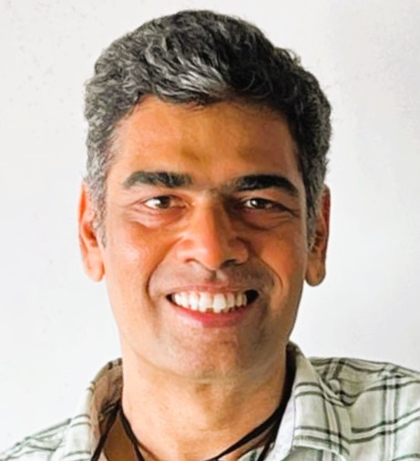
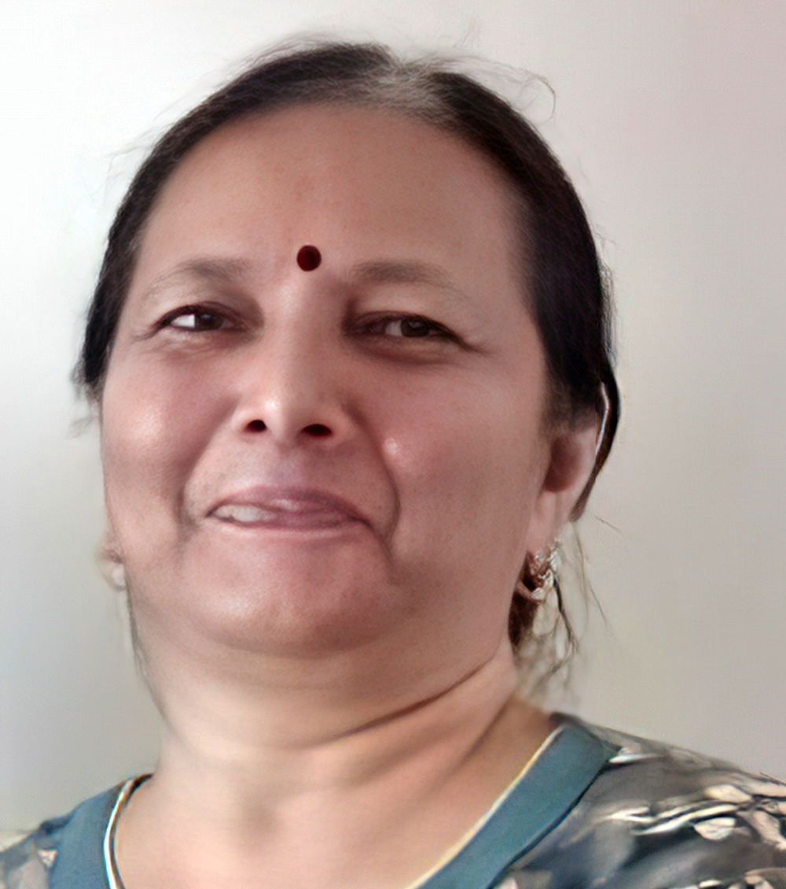

Esha Parikh
Medical Professional
I cannot have enough good things to say about Nimish! He has been instrumental in development of our wedding website. His creativity, thoroughness, and attitude made the entire process seamless. It was truly a wonderful experience working with him. He was consistently responsiveness and always eager to help make our website perfect. Could not be happier with the service we received!
Tanvi Shah
Principal Architect - Taru Atelier
I had the pleasure of collaborating with Nimish on a comprehensive visual branding project for our company website. From animated elements to branding videos and conceptual sketches, he brought a cohesive and engaging design language to life. Nimish has a sharp eye for detail, a strong sense of narrative, and was incredibly responsive throughout the process. His ability to translate abstract ideas into compelling visuals made a significant impact on our digital presence. I highly recommend working with him!
Paurav Shah
Software Engineer
I've worked with Nimish on almost everything but we were really on it together for a mobile health app. We enjoyed creating beautiful screens and layouts for mobile users which was later appraised by many. Nimish is a creative artist with expertise in multiple designing domains and can easily pick client requirements. I highly recommend Nimish for his productivity, creativity and impactful designs.

Jinesh Zaveri
Self Employed - Business
I highly recommend Mr. Nimish Shah. His exceptional artistic talents span traditional painting, masterful vector digital art, and insightful logo design. Nimish also excels in typesetting, layout, and visualizing concepts effectively. I was particularly impressed by his UI/UX recommendations for my website and food product packaging. A dedicated and talented professional with strong digital expertise, Nimish would be a significant asset to any creative design or visual communication project.

Dhara Desai
Project Manager
Due to the inherent creative as well as organizational skills, all work assignments completed by Nimish were timely and of exceptional quality. We have worked on projects involving graphics components and content design and development for web portals as well as mobile apps.
Esha Parikh
Medical Professional
I cannot have enough good things to say about Nimish! He has been instrumental in development of our wedding website. His creativity, thoroughness, and attitude made the entire process seamless. It was truly a wonderful experience working with him. He was consistently responsiveness and always eager to help make our website perfect. Could not be happier with the service we received!
Tanvi Shah
Principal Architect - Taru Atelier
I had the pleasure of collaborating with Nimish on a comprehensive visual branding project for our company website. From animated elements to branding videos and conceptual sketches, he brought a cohesive and engaging design language to life. Nimish has a sharp eye for detail, a strong sense of narrative, and was incredibly responsive throughout the process. His ability to translate abstract ideas into compelling visuals made a significant impact on our digital presence. I highly recommend working with him!